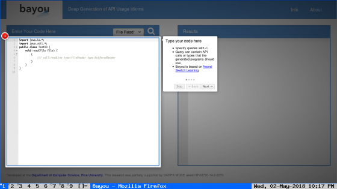

A BAYOU é uma ferramenta de aprendizado que basicamente funciona como um mecanismo de pesquisa para a codificação: você insere que tipo de programa deseja criar com algumas palavras-chave, e ela emite o código Java que desempenha a função que você está precisando, com base no seu melhor palpite.
A ferramenta foi desenvolvida por uma equipe de cientistas da computação da Universidade de Rice, nos EUA, com financiamento dos militares americanos e do Google.
Um artigo descrevendo o desenvolvimento da BAYOU e que tipos de problemas ela pode ajudar os programadores a resolver foi publicado, em inglês, no site gratuito arXiv.

Na BAYOU você insere que tipo de programa deseja criar com algumas palavras-chave, e ela emite o código Java que desempenha a função que você está precisando
{kind=link}
Na BAYOU você insere que tipo de programa deseja criar com algumas palavras-chave, e ela emite o código Java que desempenha a função que você está precisando
Rede neural de aprendizado
Para criar a ferramenta, os cientistas alimentaram o código-fonte de cerca de 1.500 aplicativos para Android, que chega a 100 milhões de linhas de código em Java, na rede neural da BAYOU, resultando em uma IA que pode programar outro software.Se o código que a BAYOU leu incluía qualquer tipo de informação sobre o que ele faz, então a ferramenta também aprendeu como esses programas funcionam.
Essa informação contextual é o que permite que a IA escreva softwares funcionais baseados em apenas algumas palavras-chave e informações básicas sobre o que o programador deseja.
Um instrumento como esse pode tornar mais simples e mais intuitivo ensinar as pessoas a codificar, já que elas podem, algum dia, usar essa IA para gerar exemplos de código ou até para verificar seu próprio trabalho.

Os criadores (a partir da esquerda): Vijay Murali, Chris Jermaine, Swarat Chaudhuri e Letaq Qi
Tecnologia promissora
Neste momento, a BAYOU ainda está nos estágios iniciais. A equipe por trás da tecnologia ainda está provando que ela realmente funciona.Para os assustados de plantão, este (ainda) não é o momento em que a IA se torna autorreplicante: a BAYOU apenas gera o que os pesquisadores chamam de “esboços” de um programa, relevantes para o que um programador está tentando escrever.
Esses esboços ainda precisam ser organizados e podem ter que ser adaptados ao projeto em questão.
Mesmo que a tecnologia seja inicial, representa um passo importante na busca por um programador de inteligência artificial, um objetivo de longa data para cientistas da computação.
Outras tentativas de criar algo parecido com a BAYOU exigiam mais orientações em direção ao tipo correto de código; como essa IA consegue trabalhar com apenas algumas palavras-chave, é muito menos demorada e muito mais fácil de usar, no geral.
Posts relacionados:
- O Facebook Messenger tem 300 mil chatbots
- MIT cria aparelho portátil que lê o que você está pensando
- Como colorir seus desenhos usando inteligência artificial
- As 3 Ondas da Inteligência Artificial
Fontes:
02/Mai/2018 22:19:17